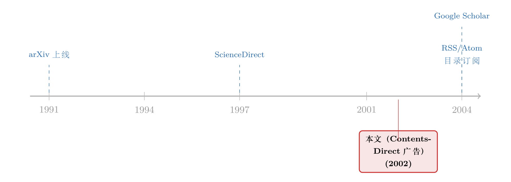

目录也是一种产品：一封 2002 年的邮件，替你「订阅」了未来
本文读的不是一篇论文，而是夹在 《Journal of Financial Economics》(2002) 正文里的一页广告——爱思唯尔（Elsevier）的 ContentsDirect。它许诺的东西小到几乎不值一提：在新一期期刊还没印出来之前，把它的目录用电子邮件发到你的信箱里。可正是这件「小事」，悄悄改写了学术世界里最稀缺的那样东西——注意力该流向哪里。
1 一页广告，藏着一个产品
翻开 2002 年的一本 JFE，你大概率会在某两篇正文之间，撞见一页与论文格格不入的东西：没有摘要、没有回归表、没有脚注，只有一行口号和一个网址。它在卖一项叫 ContentsDirect 的服务。
它卖的是什么呢？说出来你可能会失望：目录。
具体地说，你只要免费注册，勾选你关心的若干本期刊，此后每当其中一本出了新一期，系统就会在它正式上架之前，把这一期的目录（table of contents）——也就是每篇文章的标题、作者、页码——打包成一封电子邮件，主动推送到你的信箱。
就这么多。没有全文，没有 PDF，甚至没有摘要的全部，只是一份清单。
在 2002 年，这是一件比今天听起来更重要的事。那时没有 RSS 的普及，没有 Google Scholar（它要到 2004 年底才上线），没有 Twitter 上转发预印本的学术圈。你想知道「这个月 JFE 登了什么」，要么去图书馆翻当期的纸本，要么……等。
于是一个很「不学术」的问题冒出来：一份目录，凭什么值得单独做成一个产品、还郑重其事地买下顶刊的一页广告位？
2 真正稀缺的，从来不是信息
要回答这个问题，得先承认一件事：到了 2002 年，学术信息本身已经不再稀缺。
ScienceDirect 在 1990 年代后期上线，把成千上万本期刊的全文搬上了网；它的「姊妹广告」们——你在同一批 JFE 里能见到的 ScienceDirect、Backfiles、Author Gateway——卖的都是同一个故事的不同侧面：把知识搬上货架、标上价格、装进搜索框。（关于这条线，可参见《1,200 种期刊塞进一个搜索框：一页 2002 年的广告，记下了知识"上架"的那一刻》与《一页夹在顶刊里的广告：当尘封的「过刊」第一次被标上价格》。）
可问题是：当所有论文都触手可及，触手可及本身就不再是优势。一个研究者一天能读的文章数没有变，他能分配的注意力也没有变。信息越多，注意力反而越贵。
信息消耗的是接收者的注意力；因此，信息的丰富，制造的是注意力的贫乏。
这是赫伯特·西蒙（Herbert Simon, 1971）半个世纪前的洞见，而 ContentsDirect 恰恰是它最朴素的一个商业注脚。它没有试图给你更多信息——那 ScienceDirect 已经做到了；它做的是反过来的一件事：替你筛，并且主动送上门。
首先，它把「全文」收窄成「目录」。一篇论文里真正决定你「读还是不读」的，往往就是标题和作者那两行字;目录恰好就是这两行字的集合。换句话说，ContentsDirect 把一本期刊压缩成了它的信息钩子（hook），剔除了正文里那 99% 此刻还轮不到你消费的内容。
接着，一个自然的问题是：你为什么不自己去查？因为「自己去查」是一种 拉取（pull）——它要求你先想起来有这件事，再主动出击。而 ContentsDirect 把它变成了推送（push）：你什么都不必做，新一期的目录会自己来找你。这中间差的，正是「记得去查」这个看不见的认知成本。
3 把「注意力」当成一门生意来看
如果你是做金融的，读到这里应该会觉得似曾相识。
把「期刊的新一期」换成「一只股票的新消息」，把「研究者的注意力」换成「投资者的注意力」，ContentsDirect 的逻辑就和资产定价里一整条文献严丝合缝地对上了：信息不是在产生的那一刻就被定价的，它要等到有人真正注意到它，才会进入价格。
这正是「渐进信息扩散（gradual information diffusion）」这条线的核心关切——消息明明已经公开，市场却要慢半拍才反应过来，慢的那半拍，往往就慢在「谁、在什么时候、把注意力投了过来」。（可参见《市场要多久才"想明白"？——给效率装上一只秒表》与《被"同一批股东"拖慢的消息：当机构持股反而让信息扩散得更慢》。）
而「推送」这件事，在金融里更不是小事。近年的实证已经把它拍在了数据上：一条主动弹到你手机上的提醒，能实实在在地改变投资者的行为——哪怕提醒的内容你本来「迟早」也会看到。（参见《一条"跌了5%"的推送，如何让你悄悄加了杠杆》。）ContentsDirect 在 2002 年替学术界做的，本质上就是同一件事的温和版本：用一封邮件，替你决定了你这个月会注意到哪些论文。
于是反转出现了：这页看似最无聊的广告，卖的根本不是「目录」这件商品，而是注意力分配的优先权。谁的目录先进了你的信箱，谁就先一步进了你的「待读清单」;在一个论文产能远超阅读能力的世界里，这种「先一步」本身就是一种稀缺资源。一份清单，因此成了一个产品。
4 文献脉络
把 ContentsDirect 放回时间轴上，它处在学术信息「从稀缺到过载」这条大曲线的拐点附近。
早期，信息是稀缺的：你得物理地接近它。预印本要靠邮寄，期刊要靠订阅，知道「谁在做什么」靠的是会议和走廊里的交谈。1991 年 arXiv 上线，第一次让物理学家能在论文见刊之前就把它公开、并让同行主动收到——这是「推送式」学术传播的史前史。
接着，全文上网（ScienceDirect, 约 1997 年）解决了「拿得到」的问题，却制造了「看不过来」的新问题。ContentsDirect（这页 2002 年的广告）正是对这个新问题的第一波回应：既然全都拿得到了，那就帮你筛、帮你送。
然后，技术把这件事彻底商品化、再去中介化：RSS/Atom 订阅（约 2004 年起）让任何人都能自建「目录推送」，Google Scholar（2004 年底）则让「按主题追踪」变成默认选项。ContentsDirect 所占的那个生态位，很快被更开放、更免费的协议接管。

也正因如此，今天再回头看这页广告，它更像一张化石：一个商业服务，恰好定格了「注意力」第一次被当成学术市场里的稀缺品来经营的那一刻。
5 评论与延伸（Q&A + 研究方向）
(a) 几个可能的疑问
Q：这只是一页广告，凭什么值得一篇评述？
因为它是一份一手史料。它精确地记录了 2002 年学术信息服务的形态——免费、邮件、只推目录——以及那个时代对「注意力稀缺」这件事的隐性定价。把它当论文读会失望，把它当经济史的切片读则恰到好处。
Q：ContentsDirect 和 ScienceDirect 到底有什么不同？
一个解决「拿得到」，一个解决「看得过来」。ScienceDirect 是拉取式的仓库——你去搜、去下载;ContentsDirect 是推送式的提醒——它主动来找你，且只给你最浓缩的钩子（目录）。前者扩张信息供给，后者管理注意力需求，方向正好相反。
Q：把「目录推送」类比成金融里的「注意力冲击」，会不会太牵强？
机制是同构的：在两个场景里，信息都早已公开，真正起作用的是谁在何时把注意力投了过来。差别只在后果——在市场里，注意力的再分配会立刻写进价格;在学术里，它写进的是引用和议程，慢，但同样真实。
Q：既然后来 RSS 和 Google Scholar 免费做了同样的事，这项服务是不是注定失败？
与其说失败，不如说它赢在了原型、输在了协议。ContentsDirect 验证了「目录推送」这个需求是真的;一旦需求被验证，开放协议（RSS）和平台（Scholar）就会用更低的边际成本接管它。这几乎是所有「先行者被去中介化」的故事的标准剧本。
Q：为什么是「目录」，而不是「摘要」被选作推送的内容？
因为目录是信息密度与认知成本的最优折中。标题加作者，足以让你做出「读还是不读」的二元决策;再多一个字（比如全文摘要），推送的负担和你的筛选成本都会上升。它推送的不是内容，而是做决策所需的最小信息。
Q：这对今天的我们还有什么用？
它提醒我们：在一个产能过剩的领域里，真正的产品往往不是"更多"，而是"替你筛"。今天的预警邮件、算法信息流、乃至研究助手，卖的都是 ContentsDirect 当年那同一件东西——优先进入你注意力的权利。
(b) 几个可能的研究问题与提案
1. 「目录推送」是否加快了论文进入引用网络的速度？
【经济故事】如果 ContentsDirect 这类提醒服务真的把论文更早地送进了研究者的视野，那么被它覆盖的期刊，其论文的「首次被引时滞」应当系统性地缩短——这是注意力渠道对学术信息扩散的直接证据。
【可行性】中。需要 ContentsDirect 覆盖期刊清单 + 引用时间戳数据（如 Web of Science）。识别上可用服务分批上线不同期刊的时点做交错双重差分;难点在于覆盖清单的历史快照不易获取。
2. 把「注意力推送」搬到信用市场：评级变动的提醒，会不会改变债券定价的速度？
【经济故事】公司债市场以「慢」著称，消息常常要等好几天才被定价。若把「评级/财报提醒主动推送给一部分机构」当成一次注意力冲击，可以检验注意力（而非信息本身）在多大程度上解释了债券价格的迟滞。
【可行性】中。需要一个有推送功能上线时点的信息终端 + TRACE 成交数据。识别依赖「同一消息、有人收到推送、有人没收到」的横截面差异;数据可得性是主要约束。
3. 外资持有人是否更依赖「推送式」信息渠道？
【经济故事】身处异地、时区错位的外国投资者，天然处于信息劣势，可能更依赖主动推送来弥补「记得去查」的缺口。若如此，提醒服务的引入应当不成比例地提升外资对相关消息的反应速度。
【可行性】低到中。需要把「信息推送的可得性」与外资持仓在个券层面对齐，识别干净但数据极难凑齐;可先在某个有外资准入改革的市场里做探索性检验。（与《外资来了，全球新闻就传得更快吗？》的问题正相关。）
4. 「目录」作为一种最优信息压缩：推送多少字最划算？
【经济故事】标题、作者、摘要、全文，是一条信息密度递增、认知成本也递增的阶梯。存在一个理论上的「最优推送长度」，使得接收者的净决策收益最大。ContentsDirect 选了「目录」这一档，是否最优？
【可行性】高（偏理论 + 实验）。可建一个简单的注意力配置模型求解最优压缩长度，再用 A/B 实验（不同推送长度 vs. 点击/阅读率）验证。数据可控、识别干净，适合小样本起步。
6 我的判断
作为「评述者」，我得坦白：这不是一篇能用识别策略去审视的论文，它是一页广告。它没有数据、没有模型、没有可证伪的命题。把它硬塞进 paper-review 的模板里，只会得到一堆「不适用」。
但它的价值恰恰在别处。它是一份被意外保存下来的经济史标本：在 2002 年那个全文刚刚上网、注意力第一次开始稀缺的拐点上，有人敏锐地意识到——下一个该被经营的，不是信息的供给，而是注意力的分配。ContentsDirect 给出的答案（免费、推送、只给目录）今天看朴素得近乎天真，却精准地预言了此后二十年里信息流、预警邮件、乃至 AI 研究助手所做的同一件事。
对识别的「担忧」在这里无从谈起;倒是有一个史料层面的遗憾：我们手上只有这一页广告，看不到它的用户数、留存率、或它究竟把多少篇论文更早地送进了多少人的视野。要让上面那些研究问题真正落地，缺的正是这类使用层面的微观数据。
我更想看到的，是有人把「注意力的主动推送」当成一个干净的处理变量，认真地拉回到信用市场和外资持有人这两个对信息时滞最敏感的场景里去——那里，慢半拍的代价是用基点（basis point）来计的，而一封小小的提醒邮件，或许就值那几个基点。
参考文献
- Elsevier (2002). ContentsDirect [advertisement]. Journal of Financial Economics.
- Simon, H. A. (1971). Designing Organizations for an Information-Rich World. In M. Greenberger (ed.), Computers, Communication, and the Public Interest, pp. 37–72. Johns Hopkins University Press.